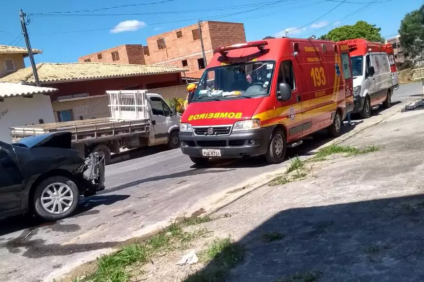

Quatro pessoas ficaram feridas após um caminhão perder os freios e bater em um carro na manhã desta quinta-feira (27)
em Contagem, na região metropolitana de Belo Horizonte. Entre as vítimas, estavam uma menina de 7 anos e um bebê de colo.
Segundo o Corpo de Bombeiros, o acidente aconteceu na rua Vinte e Cinco, no bairro Tropical. Conforme testemunhas,
o caminhão desceu a via desgovernado até atingir o Renault Sandero, onde estava a família.

A mãe, que dirigia o veículo, e o neném foram conduzidos pelo Samu ao Hospital Municipal de Contagem com ferimentos
leves. Já a outra criança teve diversas escoriações pelo corpo e foi levada para o mesmo local, por uma Unidade de Resgate.
O motorista do caminhão também teve diversos ferimentos e precisou ser conduzido ao Hospital de Pronto Socorro João
XXIII, na capital. Nesse veículo, também havia um ajudante, que recusou atendimento médico.